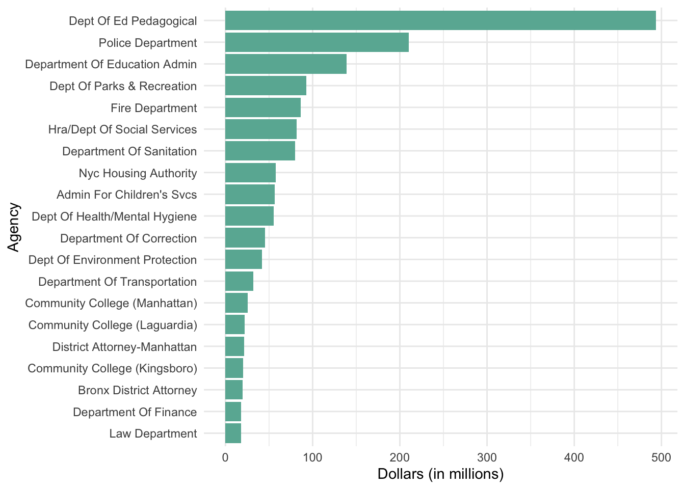

1 Analysis of New York City’s Payroll Expenditure Data”
Commission to Analyze Taxpayer Spending
1.1 Executive Summary
This report analyzes New York City personnel expenditure data collected between 2014 and 2024, with the goal of analyzing policies that effectively reduce personnel spending. The Commission proposes 3 policy options:
Policy I: Capping Salaries at Mayoral Level
Policy II: Increasing Staffing to Reduce Overtime Expenses
Policy III: Reduce Salary Increases for Top Earners
The data suggest that Policy II offers the largest amount of savings, although its implementation will be significantly difficult. Policy I would result in the least savings, but is the easiest to implement. Policy III strikes a balance between the two, offering moderate savings and ease of implementation.
The Commission most strongly recommends that the City implement Policy III, where raises for high earners are tied to demonstrated productivity improvements, ensuring sustainable wage growth.
1.1.1 Quick Facts
The job title with the highest base rate of pay is Chairman with a rate of $567 per hour.
The individual with the single highest city total payroll was Chief Fire Marshal at the Fire Department of New York (FDNY), Daniel E. Flynn. He earned $511,821 in 2021.
Code
# Which individual & in what year had the single highest city total payroll (regular and overtime combined)?most_paid <- nyc_payroll |>filter(total_pay ==max(total_pay,na.rm =TRUE)) |>select(fiscal_year,last_name,first_name,mid_init, agency_name,title_description, total_pay)
The individual who worked the most overtime hours in a single year was James Internicola, Correction Officer at the Department Of Correction. He logged 3,693 hours of overtime in 2022.
Code
# Which individual worked the most overtime hours in this data set?most_OT <- nyc_payroll |>filter(ot_hours ==max(ot_hours)) |>select(fiscal_year, last_name, first_name, mid_init,agency_name,title_description,ot_hours)
The Department of Education has the highest average total annual payroll at $10,083,191,004 a year.
New York City’s population of 8.26 million requires a sizable host of people to maintain a livable city for all (York, 2024). In 2024 alone, the City employed 562,898 people to put our fires out, teach our children, and clean up our streets, among other things (City, 2024). It follows then, that a large portion of the City’s budget is dedicated to personnel costs. While the efforts of these individuals is highly appreciated, we must also strive for optimization in personnel costs to lower the cost of living so that New Yorkers can thrive in our city.
1.3 Problem Description
In fiscal year 2024, ~31% ($32,998,000) of the City’s $107,115,000 million budget was set aside to pay for the salaries and wages of government employees. However, in 2025, the city government estimates that it will see an 3.8% increase in personnel spending. Likewise, the City predicts that 2026 will see a 2.6% rise in salaries, even though total expenditures will be down 1.1% that year. Indeed, rising personnel costs is and will continue to be a pervasive problem for New York City, with the Comptroller estimating a 3.4% annual growth in payroll expenditure for 2026 and beyond (figure 1) (Comptroller, 2024).
To address this problem, Mayor Eric L. Adams has tasked the Commission to Analyze Taxpayer Spending (CATS) with investigating payroll expenditures, formulating policies aimed at reducing the City’s payroll costs, and offering data based recommendations. This report presents our findings.
1.4 Data Acquisition and Preparation
The Commission acquired Citywide Payroll Data from NYC Open Data, wherein New York City agencies publish data that they collect and use. The data set contains various points of information on every city employee as inputted into the Personnel Management System by user Agencies. As an example of the datapoints in the set, table @ref(table-eric-adams-payroll) presents an employee salary table for Mayor Eric L. Adams from 2014 to 2024.
The analysis was performed using R and several R packages, including (Team, 2024), (Wickham & Hester, 2024), (Wickham, 2016), and (Wickham et al., 2024). The Commission notes that superficial changes were made to several text columns in the dataframe to prepare them for presentation. Furthermore, the Commission creates two new columns:
total_pay
base_rate_hr
The total_pay column contains the total gross pay of each employee based on their base pay, their pay basis (per Hour, per Day, or assumed annual salary), and the number of hours–both regular and OT–reported. Several cases in the data set contained negative counts for hours. The Commision addressed this by setting total_pay to NA for these cases. The base_rate_hr column represents an employee’s estimated hourly wage, calculated based on their pay basis, while ensuring reasonable hourly rate assumptions of less than $67,440 per hour. This assumption was developed to address pay basis and base salary mismatch errors.
1.5 Policy Analysis
The Commission proposes the following policies to address mounting payroll expenditures.
1.5.1 Policy I: Capping Salaries at Mayoral Level
One approach to reducing personnel expenditures is to cap the salaries of subordinate employees, so that the mayor of the City earns the highest salary. Table (tab-mayor_salary_table?) presents the salaries of New York City’s Mayor from 2014 to 2024.
Table: Salaries of New York City’s Mayor (2014-2024)
In total, 1,566 job titles earned more money than the mayor did during the the same fiscal year. A distribution of the agencies with employees exceeding the mayoral salary is shown in plot @ref(fig:agencies_exceeding_mayoral_cap). The vast majority of people who earned more money than the mayor work for the Department of Corrections. This is followed by the FDNY and the NYPD. These agencies would see the largest savings if personnel salaries are capped at the mayoral level.
ggplot(exceeding_agencies |>slice_max(n, n=N_ITEMS), aes(x =reorder(agency_name, n), y = n)) +geom_col(fill ="#69b3a2") +coord_flip() +labs(title =paste("Top",N_ITEMS,"Agencies Exceeding Mayoral Cap"),x ="Agency",y ="Number of Entries Exceeding Cap \n(FY2014-FY2024)" ) +theme_minimal()
The Commission identifies agency title groupings that have significant numbers of payroll entries over the mayoral cap. These are presented in table @ref(tab:agency_titles_over_mayoral_cap). The top two rows suggest that Captains at the Department of Corrections and the Fire Department would be most affected by this policy.
The total savings per fiscal year that could have resulted from enactment of the proposed policy are presented in table @ref(tab:savings_per_annum_mayoral_cap). The Commission notes that, had the proposed policy been enacted in 2014, New York City would have seen total savings of $39,074,243.
Code
# Determine total savings if these employees’ compensation were capped at the mayor’s salary.savings_per_year <- nyc_payroll |>left_join(mayor_pay, join_by(fiscal_year == fiscal_year)) |>filter(total_pay > mayoral_cap) |>mutate(savings = total_pay - mayoral_cap) |>group_by(fiscal_year) |>summarize(total_savings =round(sum(savings,na.rm=TRUE),0), n_over =n())total_savings <- savings_per_year |>summarize(sum(total_savings, na.rm=TRUE))datatable(savings_per_year |>rename("Fiscal Year"= fiscal_year,"# of Entries Exceeding Mayoral Cap"= n_over,"Savings ($)"= total_savings))
The Commission does not recommend a blanket capping subordinate salaries at the mayoral level. A majority of employees earning more than the mayor hold positions that involve significant risks. Given the nature of these high-risk jobs, the Commission believes that these employees should be fairly compensated for the additional responsibilities and dangers they face in their roles. However, the Commission is not against capping salaries on a title-by-title basis.
1.5.2 Policy II: Increasing Staffing to Reduce Overtime Expenses
A second approach to curtailing personnel expenditure is increasing staffing to reduce OT expenses. For this analysis, the Commission assumes that a full-time position is 2000 hours a year. Figure @ref(fig:OT_to_FTE) presents OT hours converted to the number of new full-time employees required to fulfill the same amount of work hours. The total number of new employees needed to address the current OT load is 200,412. This represents the workforce that would need to be hired if OT hours were eliminated through additional staffing. The Commission notes that this number is approximately 50% of the last fiscal year’s workforce 1.
Code
nyc_payroll |>filter(ot_hours >0) |>group_by(agency_name, title_description, fiscal_year) |>summarize(total_ot =sum(ot_hours), .groups ="drop") |>mutate(n_fte_yearly = total_ot /2000) |>group_by(agency_name, title_description) |>summarize(total_n_fte =sum(n_fte_yearly, na.rm=TRUE), .groups ="drop") |>arrange(desc(total_n_fte)) |>slice_max(total_n_fte, n = N_ITEMS) |># Show top 20 onlyggplot(aes(x =reorder(paste(agency_name, title_description, sep=" | "), total_n_fte), y = total_n_fte)) +geom_col(fill ="#69b3a2") +coord_flip() +labs(title ="OT Hours Converted to FTE",x ="Agency | Job Title",y ="Number of Full-Time Equivalent Positions", ) +theme_minimal()
The total potential savings from this proposed policy amount to $15,025,441,508 (Table @ref(tab:savings_per_agency_OT)). The commission notes that the potential savings from this policy are almost 400x that of Policy I.
Enacting this policy entails recruiting:
over 30,000 police officers,
over 20,000 firefighters,
and over 15,000 corrections officers.
These positions are difficult to fill, as they are high-risk in nature and require specialized training. Therefore, the Commission recommends a more feasible, scaled-down version of this policy. Under this modified approach, the City would subsidize the training costs for these critical positions, and the recruitment rate would be regularly assessed to ensure that sufficient progress is being made in filling these roles.
Table @ref(tab:savings_per_agency_OT) presents total savings by agency.
1.5.3 Policy III: Reduce Salary Increases for Top Earners
The third policy the Commission proposes to reduce personnel spending is the reduction of salary increases for the top 10% of earners in their respective agencies to 1.05% of their base hourly rate. The Commission found that on average, high earners get a raise every 1.85 years, and presents the distribution of number of raises per year in figure @ref(fig:pay_raise_freq).
Code
high_earners <- nyc_payroll |>group_by(agency_name) |>mutate(high_earner_threshold =quantile(total_pay, 0.9, na.rm =TRUE)) |>ungroup() |>filter(!is.na(total_pay),!is.na(first_name),!is.na(last_name),!is.na(base_rate_hr),!is.na(fiscal_year), total_pay > high_earner_threshold)# Calculate the number of raises per year for each employeehigh_earners_with_raises <- high_earners |>group_by(agency_name, title_description, first_name, mid_init, last_name) |>arrange(fiscal_year) |>mutate(base_rate_change =case_when( is.na(lag(base_rate_hr)) |is.na(lag(fiscal_year)) ~0,TRUE~ (base_rate_hr -lag(base_rate_hr))/(fiscal_year -lag(fiscal_year))),years_worked =max(fiscal_year,na.rm=TRUE) -min(fiscal_year,na.rm=TRUE), # Calculate years workedn_raises =sum(base_rate_change >0, na.rm =TRUE),raises_per_year = n_raises / years_worked,avg_rate_increase_per_person =mean(base_rate_change, na.rm=TRUE),capped_raise = PAY_RAISE_CAP *lag(base_rate_hr, order_by = fiscal_year), excess_raise =pmax(base_rate_change - capped_raise, 0) ) |>filter(!is.na(n_raises),years_worked>0) |>ungroup()# Plot histogram of raises per yearggplot(high_earners_with_raises |>filter(raises_per_year <=1), aes(x = raises_per_year)) +geom_histogram(binwidth =0.05, fill ="#69b3a2", color ="white") +labs(title ="Number of Pay Raises Per Year Among High Earners",x ="Raises per Year",y ="Number of Employees" ) +theme_minimal()
We determine the agencies and titles with the highest average number of raises per year, and present the findings in table @ref(tab:one_raise_per_year)). 523 high-salary jobs have an average pay raise rate of one a year.
We find the average amount that the hourly base rate increases per agency. The highest average increase is $7.70 at Brooklyn Community Board 12. The Commission also notes the appearance of 11 community boards within the top 20 agencies (figure @ref(fig:avg_pay_raise_amt_per_agency)).
Combining these two metrics, we get an estimate of the amount spent per agency on high-earner raises over the last 10 fiscal years. The Department of Education far outranks all other agencies with an expenditure of almost $500 million (figure @ref(fig:)). They are followed by the Police Department at just over $200 million. Over the last 10 years, the total amount spent by the City on pay raises for high earners was about $1.9 billion.
Code
total_raise_spending <- avg_pay_raise_rate_data |>inner_join(avg_rate_increase_per_agency_data, join_by(agency_name == agency_name)) |>group_by(agency_name) |>summarize(total_raise_spend_per_year =sum(n_raises_per_agency * avg_pay_raise_rate * avg_rate_increase_per_agency *2000, na.rm=TRUE)) total_raise_spending |>slice_max(total_raise_spend_per_year,n=20) |>ggplot(aes(x =reorder(agency_name, total_raise_spend_per_year), y = total_raise_spend_per_year)) +geom_col(fill ="#69b3a2") +coord_flip() +labs(title =paste("Top",N_ITEMS,"Agencies by Amount Spent on Pay Raises for High Earners"),x ="Agency",y ="Dollars" ) +theme_minimal()

The Commission estimates that, if high-earner raises had been capped at 0.05% in 2014, total savings by the City are approximately $976 million. Such a policy could have slashed 10-year-expenditure by up to 50%. The following analysis demonstrates the potential savings:
Based on these findings, the Commission recommends adopting a measured approach to this policy. High earners should be permitted to receive higher compensation if it is justified by demonstrable productivity improvements. This ensures that wage growth is tied to measurable value.
1.6 Conclusion
In conclusion, the Commission’s report highlights the potential benefits of the implementation of three policies: capping salaries at the mayoral level, increasing staffing to reduce overtime, and reducing salary increases for top earners. Given the fiscal challenges facing New York City, and the Commission’s analysis of New York City’s personnel expenditure data, we most strongly support the adoption of Policy III. This option offers reasonable savings and is easy to implement.
Team, R. C. (2024). R: A language and environment for statistical computing. https://www.R-project.org
Wickham, H. (2016). ggplot2: Elegant graphics for data analysis. Springer-Verlag New York. https://ggplot2.tidyverse.org/
Wickham, H., Francois, R., Henry, L., & Müller, K. (2024). Dplyr: A grammar of data manipulation. R Package Version 1.1.2. https://CRAN.R-project.org/package=dplyr
The Comptroller estimates that non-OT personnel spending will be $500 million lower than budgeted for in 2025. However, we have shown that an increase in regular personnal spending leads to substantial savings.↩︎
Source Code
---title: "Analysis of New York City's Payroll Expenditure Data"author: Jocely Lopez Lunaformat: html: code-tools: true code-fold: true toc: true toc-location: right number-sections: true toc-depth: 3 css: styles.cssexecute: eval: truebibliography: references.bibcsl: apa.csl---# Analysis of New York City's Payroll Expenditure Data"*Commission to Analyze Taxpayer Spending*## Executive SummaryThis report analyzes New York City personnel expenditure data collected between 2014 and 2024, with the goal of analyzing policies that effectively reduce personnel spending. The Commission proposes 3 policy options:- Policy I: Capping Salaries at Mayoral Level- Policy II: Increasing Staffing to Reduce Overtime Expenses- Policy III: Reduce Salary Increases for Top EarnersThe data suggest that Policy II offers the largest amount of savings, although its implementation will be significantly difficult. Policy I would result in the least savings, but is the easiest to implement. Policy III strikes a balance between the two, offering moderate savings and ease of implementation. The Commission most strongly recommends that the City implement Policy III, where raises for high earners are tied to demonstrated productivity improvements, ensuring sustainable wage growth.### Quick Facts* The job title with the highest base rate of pay is **Chairman** with a rate of **\$567** per hour.``` {r, echo=TRUE, message=FALSE, warning=FALSE}library(readr)library(stringr)library(dplyr)library(knitr)library(DT)library(ggplot2)nyc_payroll <- read_csv("data/mp01/nyc_payroll_export.csv") |> mutate(agency_name = str_to_title(agency_name), last_name = str_to_title(last_name), first_name = str_to_title(first_name), work_location_borough = str_to_title(work_location_borough), title_description = str_to_title(title_description), leave_status_as_of_june_30 = str_to_title(leave_status_as_of_june_30))# ConstantsWORK_HOURS_IN_DAY = 7.5FT_ANNUAL_HOURS = 2000N_ITEMS = 20PAY_RAISE_CAP = 0.005HOURLY_RATE_MAX = nyc_payroll |> filter(pay_basis == "per Hour") |> arrange(base_salary) |> mutate(jump = base_salary - lag(base_salary)) |> select(jump, base_salary, agency_name) |> arrange(jump) |> slice_max(jump,n=1) |> pull(base_salary)# Adding total_pay and base_rt_hr columns.nyc_payroll <- nyc_payroll |> mutate(total_pay = case_when( (pay_basis == "per Day" & regular_hours >= 0 & ot_hours < 0) ~ base_salary * floor(regular_hours / WORK_HOURS_IN_DAY), (pay_basis == "per Day" & regular_hours >= 0 & ot_hours >= 0) ~ base_salary * floor(regular_hours / WORK_HOURS_IN_DAY) + ((base_salary/WORK_HOURS_IN_DAY) * ot_hours * 1.5), (pay_basis == "per Hour" & regular_hours >= 0 & ot_hours >= 0) ~ base_salary * (regular_hours + ot_hours * 1.5), (pay_basis == "per Hour" & regular_hours >= 0 & ot_hours < 0) ~ base_salary * regular_hours, (pay_basis == "per Hour" & regular_hours < 0) ~ NA, .default = base_salary + (base_salary/FT_ANNUAL_HOURS * 1.5 * ot_hours), ), base_rate_hr = case_when( pay_basis == "per Day" & (base_salary/WORK_HOURS_IN_DAY) < HOURLY_RATE_MAX ~ base_salary / WORK_HOURS_IN_DAY, pay_basis == "per Day" & (base_salary/WORK_HOURS_IN_DAY) >= HOURLY_RATE_MAX ~ base_salary / FT_ANNUAL_HOURS, # I assume they meant pay basis is per Annum pay_basis == "per Hour" & base_salary < HOURLY_RATE_MAX ~ base_salary, pay_basis == "per Hour" & base_salary >= HOURLY_RATE_MAX ~ base_salary / FT_ANNUAL_HOURS, # I assume they meant per Annum TRUE ~ base_salary / FT_ANNUAL_HOURS ) )highest_base_rate <- nyc_payroll |> select(fiscal_year, last_name,mid_init,first_name, title_description, agency_name, base_rate_hr) |> slice_max(base_rate_hr, n=1)```* The individual with the single highest city total payroll was **Chief Fire Marshal** at the Fire Department of New York (FDNY), Daniel E. Flynn. He earned **\$511,821** in 2021.``` {r, echo=TRUE,message=FALSE, warning=FALSE}# Which individual & in what year had the single highest city total payroll (regular and overtime combined)?most_paid <- nyc_payroll |> filter(total_pay == max(total_pay,na.rm = TRUE)) |> select(fiscal_year,last_name,first_name,mid_init, agency_name,title_description, total_pay)```* The individual who worked the most overtime hours in a single year was James Internicola, Correction Officer at the Department Of Correction. He logged **3,693** hours of overtime in 2022.``` {r, echo=TRUE,message=FALSE, warning=FALSE}# Which individual worked the most overtime hours in this data set?most_OT <- nyc_payroll |> filter(ot_hours == max(ot_hours)) |> select(fiscal_year, last_name, first_name, mid_init,agency_name,title_description,ot_hours)```* The Department of Education has the highest average total annual payroll at **\$10,083,191,004** a year. ``` {r,echo=TRUE,message=FALSE, warning=FALSE}high_total_annual_payroll <- nyc_payroll |> group_by(agency_name, fiscal_year) |> summarize( sum_total_payroll = sum(total_pay,na.rm=TRUE), n_emp = n() ) |> group_by(agency_name) |> summarize(mean_total_annual_payroll = mean(sum_total_payroll, na.rm = TRUE)) |> slice_max(mean_total_annual_payroll, n=1)```* The **Department of Education** has the most employees on payroll in each year.```{r,echo=TRUE,message=FALSE, warning=FALSE}most_emps <- nyc_payroll |> group_by(fiscal_year, agency_name) |> summarize( num_employees = n(), .groups = "drop" ) |> slice_max(num_employees, n = 1, by = fiscal_year)```* The **Board of Elections** has the highest overtime (OT) usage, where employees log approximately 1 hour of OT for every 5 regular hours. ``` {r, echo=TRUE,message=FALSE, warning=FALSE}highest_OT_usage <- nyc_payroll |> group_by(agency_name) |> summarize( sum_reg = sum(regular_hours,na.rm=TRUE), sum_ot = sum(ot_hours,na.rm=TRUE), ot_ratio = sum_ot/sum_reg ) |> slice_max(ot_ratio, n = 1)```* The average salary of employees who work outside of the five boroughs is **\$97,125**.``` {r,echo=TRUE,message=FALSE, warning=FALSE}salary_out_nyc <- nyc_payroll |> filter( !is.na(work_location_borough), !work_location_borough %in% c("Bronx","Brooklyn","Queens","Manhattan","Staten Island") ) |> summarize(average = mean(total_pay,na.rm=TRUE))```* From 2014 to 2024, the city’s aggregate payroll grew **45%**, from \$22,452,904,026 to \$32,635,103,990.``` {r,echo=TRUE,message=FALSE, warning=FALSE}actual_payroll <- nyc_payroll |> group_by(fiscal_year) |> summarize( aggregate_pay = sum(total_pay,na.rm=TRUE) ) |> mutate(percent_change = ((aggregate_pay - lag(aggregate_pay)) / lag(aggregate_pay)) * 100)```## BackgroundNew York City's population of 8.26 million requires a sizable host of people to maintain a livable city for all [@fox5ny]. In 2024 alone, the City employed 562,898 people to put our fires out, teach our children, and clean up our streets, among other things [@nyc_open_data_payroll]. It follows then, that a large portion of the City's budget is dedicated to personnel costs. While the efforts of these individuals is highly appreciated, we must also strive for optimization in personnel costs to lower the cost of living so that New Yorkers can thrive in our city. ## Problem DescriptionIn fiscal year 2024, ~31% (\$32,998,000) of the City's \$107,115,000 million budget was set aside to pay for the salaries and wages of government employees. However, in 2025, the city government estimates that it will see an 3.8% increase in personnel spending. Likewise, the City predicts that 2026 will see a 2.6% rise in salaries, even though total expenditures will be down 1.1% that year. Indeed, rising personnel costs is and will continue to be a pervasive problem for New York City, with the Comptroller estimating a 3.4% annual growth in payroll expenditure for 2026 and beyond (figure 1) [@nyc_comptroller_annual_analysis].::: {#fig-payroll_expenditure_plot}**Figure 1: Payroll Expenditure per Year**``` {r, echo=TRUE,message=FALSE,warning=FALSE, fig.align="center",label="payroll_expenditure_plot", fig.cap = "Source: NYC Payroll Data (Actual) + Forecast from NYC Comptroller"}last_yr = tail(actual_payroll,n=1) |> pull(fiscal_year)last_ap = tail(actual_payroll,n=1) |> pull(aggregate_pay)predicted_payroll <- tibble( fiscal_year = c(last_yr,2025, 2026, 2027, 2028), aggregate_pay = c(last_ap,last_ap*1.038, last_ap*1.038*1.026, last_ap*1.038*1.026*1.038, last_ap*1.038*1.026*(1.038^2)) )combined_data <- bind_rows( predicted_payroll |> mutate(type = "Predicted"), actual_payroll |> mutate(type = "Actual"))|> ggplot(aes(x = fiscal_year, y = aggregate_pay, color = type, linetype = type)) + geom_line(linewidth = 1.2) + geom_point(size = 3) + scale_color_manual(values = c("Actual" = "#78c2ad", "Predicted" = "gray80")) + labs( title = "NYC Payroll Expenditure", x = "Fiscal Year", y = "Aggregate Payroll ($)", ) + theme_minimal()```:::To address this problem, Mayor Eric L. Adams has tasked the Commission to Analyze Taxpayer Spending (CATS) with investigating payroll expenditures, formulating policies aimed at reducing the City’s payroll costs, and offering data based recommendations. This report presents our findings.## Data Acquisition and PreparationThe Commission acquired Citywide Payroll Data from NYC Open Data, wherein New York City agencies publish data that they collect and use. The data set contains various points of information on every city employee as inputted into the Personnel Management System by user Agencies. As an example of the datapoints in the set, table \@ref(table-eric-adams-payroll) presents an employee salary table for Mayor Eric L. Adams from 2014 to 2024.```{r, label="table-eric-adams-payroll",echo=TRUE,message=FALSE,warning=FALSE,message=FALSE, warning=FALSE}eric_adams_payroll <- nyc_payroll |> filter( first_name == "Eric", mid_init == "L", last_name == "Adams" ) |> group_by(fiscal_year ) |> summarize( title_description = str_c(unique(title_description), collapse = ", "), agency_name = str_c(unique(agency_name), collapse = ", "), total_salary = sum(base_salary, na.rm = TRUE), .groups = "drop" )|> rename("Fiscal Year" = fiscal_year, "Total Salary" = total_salary, "Agency Name" = agency_name, "Position" = title_description )|> datatable(options = list(pageLength = 10), rownames = FALSE )```The analysis was performed using R and several R packages, including [@R-core], [@readr], [@ggplot2], and [@dplyr]. The Commission notes that superficial changes were made to several text columns in the dataframe to prepare them for presentation. Furthermore, the Commission creates two new columns:1. ```total_pay```2. ```base_rate_hr```The ```total_pay``` column contains the total gross pay of each employee based on their base pay, their pay basis (per Hour, per Day, or assumed annual salary), and the number of hours--both regular and OT--reported. Several cases in the data set contained negative counts for hours. The Commision addressed this by setting total_pay to ```NA``` for these cases. The ```base_rate_hr``` column represents an employee's estimated hourly wage, calculated based on their pay basis, while ensuring reasonable hourly rate assumptions of less than $67,440 per hour. This assumption was developed to address pay basis and base salary mismatch errors.## Policy AnalysisThe Commission proposes the following policies to address mounting payroll expenditures.### Policy I: Capping Salaries at Mayoral LevelOne approach to reducing personnel expenditures is to cap the salaries of subordinate employees, so that the mayor of the City earns the highest salary. Table @tab-mayor_salary_table presents the salaries of New York City's Mayor from 2014 to 2024. ::: {#tab-mayor_salary_table}Table: Salaries of New York City's Mayor (2014-2024)``` {r mayor_salary_table, echo=TRUE, message=FALSE,warning=FALSE}mayor_pay <- nyc_payroll |> filter(title_description == "Mayor" & leave_status_as_of_june_30 == "Active") |> select(fiscal_year, mayoral_cap = total_pay)kable(mayor_pay, col.names = c("Fiscal Year", "Mayoral Cap ($)"))```:::In total, 1,566 job titles earned more money than the mayor did during the the same fiscal year. A distribution of the agencies with employees exceeding the mayoral salary is shown in plot \@ref(fig:agencies_exceeding_mayoral_cap). The vast majority of people who earned more money than the mayor work for the Department of Corrections. This is followed by the FDNY and the NYPD. These agencies would see the largest savings if personnel salaries are capped at the mayoral level. ``` {r, label=agencies_exceeding_mayoral_cap,echo=TRUE,message=FALSE,warning=FALSE}exceeding_agencies <- nyc_payroll |> left_join(mayor_pay, join_by(fiscal_year == fiscal_year)) |> filter(total_pay > mayoral_cap) |> select(fiscal_year, last_name, mid_init, first_name, agency_name, title_description, total_pay) |> group_by(agency_name) |> summarize(n = n())remaining_agency_count <- max(nrow(exceeding_agencies) - N_ITEMS, 0)remaining_sum <- exceeding_agencies |> slice_min(n, n = remaining_agency_count) |> summarize(sum_n = sum(n)) |> pull(sum_n)remaining_agency_countremaining_sumggplot(exceeding_agencies |> slice_max(n, n=N_ITEMS), aes(x = reorder(agency_name, n), y = n)) + geom_col(fill = "#69b3a2") + coord_flip() + labs( title = paste("Top",N_ITEMS,"Agencies Exceeding Mayoral Cap"), x = "Agency", y = "Number of Entries Exceeding Cap \n(FY2014-FY2024)" ) + theme_minimal()```The Commission identifies agency title groupings that have significant numbers of payroll entries over the mayoral cap. These are presented in table \@ref(tab:agency_titles_over_mayoral_cap). The top two rows suggest that Captains at the Department of Corrections and the Fire Department would be most affected by this policy.``` {r, label=agency_titles_over_mayoral_cap, echo=TRUE,message=FALSE,warning=FALSE}agency_titles_over_mayoral_cap <- nyc_payroll |> left_join(mayor_pay, join_by(fiscal_year == fiscal_year)) |> mutate(is_over_cap = total_pay > mayoral_cap) |> group_by(agency_name, title_description) |> summarize(n = n(), n_over = sum(is_over_cap, na.rm = TRUE), freq = mean(is_over_cap, na.rm = TRUE)) agency_titles_over_mayoral_cap |> filter(n_over > 0) |> select(agency_name,title_description,n_over) |> arrange(desc(n_over)) |> rename("Agency Name" = agency_name, "Title Description" = title_description, "Entries Over Mayoral Cap" = n_over) |> datatable()```The total savings per fiscal year that could have resulted from enactment of the proposed policy are presented in table \@ref(tab:savings_per_annum_mayoral_cap). The Commission notes that, had the proposed policy been enacted in 2014, New York City would have seen total savings of \$39,074,243.``` {r,label=savings_per_annum_mayoral_cap,echo=TRUE,message=FALSE,warning=FALSE} # Determine total savings if these employees’ compensation were capped at the mayor’s salary.savings_per_year <- nyc_payroll |> left_join(mayor_pay, join_by(fiscal_year == fiscal_year)) |> filter(total_pay > mayoral_cap) |> mutate(savings = total_pay - mayoral_cap) |> group_by(fiscal_year) |> summarize(total_savings = round(sum(savings,na.rm=TRUE),0), n_over = n())total_savings <- savings_per_year |> summarize(sum(total_savings, na.rm=TRUE))datatable(savings_per_year |> rename("Fiscal Year" = fiscal_year, "# of Entries Exceeding Mayoral Cap" = n_over, "Savings ($)" = total_savings))```The Commission does not recommend a blanket capping subordinate salaries at the mayoral level. A majority of employees earning more than the mayor hold positions that involve significant risks. Given the nature of these high-risk jobs, the Commission believes that these employees should be fairly compensated for the additional responsibilities and dangers they face in their roles. However, the Commission is not against capping salaries on a title-by-title basis. ### Policy II: Increasing Staffing to Reduce Overtime ExpensesA second approach to curtailing personnel expenditure is increasing staffing to reduce OT expenses. For this analysis, the Commission assumes that a full-time position is 2000 hours a year.Figure \@ref(fig:OT_to_FTE) presents OT hours converted to the number of new full-time employees required to fulfill the same amount of work hours. The total number of new employees needed to address the current OT load is 200,412. This represents the workforce that would need to be hired if OT hours were eliminated through additional staffing. The Commission notes that this number is approximately **50%** of the last fiscal year's workforce [^1].[^1]: The Comptroller estimates that non-OT personnel spending will be $500 million lower than budgeted for in 2025. However, we have shown that an increase in regular personnal spending leads to substantial savings.``` {r, label=OT_to_FTE,echo=TRUE,message=FALSE,warning=FALSE}nyc_payroll |> filter(ot_hours > 0) |> group_by(agency_name, title_description, fiscal_year) |> summarize(total_ot = sum(ot_hours), .groups = "drop") |> mutate(n_fte_yearly = total_ot / 2000) |> group_by(agency_name, title_description) |> summarize(total_n_fte = sum(n_fte_yearly, na.rm=TRUE), .groups = "drop") |> arrange(desc(total_n_fte)) |> slice_max(total_n_fte, n = N_ITEMS) |> # Show top 20 only ggplot(aes(x = reorder(paste(agency_name, title_description, sep=" | "), total_n_fte), y = total_n_fte)) + geom_col(fill = "#69b3a2") + coord_flip() + labs( title = "OT Hours Converted to FTE", x = "Agency | Job Title", y = "Number of Full-Time Equivalent Positions", ) + theme_minimal()```The total potential savings from this proposed policy amount to \$15,025,441,508 (Table \@ref(tab:savings_per_agency_OT)). The commission notes that the potential savings from this policy are almost **400x** that of Policy I. Enacting this policy entails recruiting:- over **30,000** police officers,- over **20,000** firefighters,- and over **15,000** corrections officers.These positions are difficult to fill, as they are high-risk in nature and require specialized training. Therefore, the Commission recommends a more feasible, scaled-down version of this policy. Under this modified approach, the City would subsidize the training costs for these critical positions, and the recruitment rate would be regularly assessed to ensure that sufficient progress is being made in filling these roles.Table \@ref(tab:savings_per_agency_OT) presents total savings by agency.``` {r, label=savings_per_agency_OT,echo=TRUE,message=FALSE,warning=FALSE}nyc_payroll |> filter(ot_hours > 0) |> mutate(savings = base_rate_hr * ot_hours) |> group_by(agency_name) |> summarize(total_savings = round(sum(savings, na.rm=TRUE),0)) |> arrange(desc(total_savings)) |> rename("Agency Name" = agency_name, "Total Savings ($)" = total_savings) |> datatable()```### Policy III: Reduce Salary Increases for Top EarnersThe third policy the Commission proposes to reduce personnel spending is the reduction of salary increases for the top 10% of earners in their respective agencies to 1.05% of their base hourly rate. The Commission found that on average, high earners get a raise every 1.85 years, and presents the distribution of number of raises per year in figure \@ref(fig:pay_raise_freq).```{r, label=pay_raise_freq,echo=TRUE,message=FALSE,warning=FALSE}high_earners <- nyc_payroll |> group_by(agency_name) |> mutate(high_earner_threshold = quantile(total_pay, 0.9, na.rm = TRUE)) |> ungroup() |> filter(!is.na(total_pay), !is.na(first_name), !is.na(last_name), !is.na(base_rate_hr), !is.na(fiscal_year), total_pay > high_earner_threshold)# Calculate the number of raises per year for each employeehigh_earners_with_raises <- high_earners |> group_by(agency_name, title_description, first_name, mid_init, last_name) |> arrange(fiscal_year) |> mutate( base_rate_change = case_when( is.na(lag(base_rate_hr)) | is.na(lag(fiscal_year)) ~ 0, TRUE ~ (base_rate_hr - lag(base_rate_hr))/(fiscal_year - lag(fiscal_year))), years_worked = max(fiscal_year,na.rm=TRUE) - min(fiscal_year,na.rm=TRUE), # Calculate years worked n_raises = sum(base_rate_change > 0, na.rm = TRUE), raises_per_year = n_raises / years_worked, avg_rate_increase_per_person = mean(base_rate_change, na.rm=TRUE), capped_raise = PAY_RAISE_CAP * lag(base_rate_hr, order_by = fiscal_year), excess_raise = pmax(base_rate_change - capped_raise, 0) ) |> filter(!is.na(n_raises),years_worked>0) |> ungroup()# Plot histogram of raises per yearggplot(high_earners_with_raises |> filter(raises_per_year <= 1), aes(x = raises_per_year)) + geom_histogram(binwidth = 0.05, fill = "#69b3a2", color = "white") + labs( title = "Number of Pay Raises Per Year Among High Earners", x = "Raises per Year", y = "Number of Employees" ) + theme_minimal()```We determine the agencies and titles with the highest average number of raises per year, and present the findings in table \@ref(tab:one_raise_per_year)). 523 high-salary jobs have an average pay raise rate of one a year. ``` {r,label=one_raise_per_year,echo=TRUE,message=FALSE,warning=FALSE}avg_pay_raise_rate_data <- high_earners_with_raises |> filter(raises_per_year > 0 , raises_per_year <= 1 ) |> group_by(agency_name, title_description) |> summarize(avg_pay_raise_rate = mean(raises_per_year, na.rm=TRUE), med_pay_raise_rate = median(raises_per_year, na.rm=TRUE), n_raises_per_agency = sum(n_raises,na.rm=TRUE), .groups="drop")avg_pay_raise_rate_data |> filter(avg_pay_raise_rate == 1) |> select(agency_name,title_description) |> rename("Agency Name" = agency_name, "Title Description" = title_description) |> datatable()```We find the average amount that the hourly base rate increases per agency. The highest average increase is $7.70 at Brooklyn Community Board 12. The Commission also notes the appearance of **11** community boards within the top 20 agencies (figure \@ref(fig:avg_pay_raise_amt_per_agency)).``` {r, fig.cap="Average pay raise amount per agency", fig.name="avg_pay_raise_amt_per_agency", echo=TRUE,message=FALSE,warning=FALSE}avg_rate_increase_per_agency_data <- high_earners_with_raises |> group_by(agency_name) |> filter(avg_rate_increase_per_person != Inf, avg_rate_increase_per_person != -Inf ) |> summarize(avg_rate_increase_per_agency = mean(avg_rate_increase_per_person, na.rm=TRUE), .groups = "drop")avg_rate_increase_per_agency_data |> slice_max(avg_rate_increase_per_agency, n = N_ITEMS) |> ggplot(aes(x = reorder(agency_name, avg_rate_increase_per_agency), y = avg_rate_increase_per_agency)) + geom_col(fill = "#69b3a2") + coord_flip() + labs( title = paste("Top",N_ITEMS,"Agencies by Mean Pay Raise Amount"), x = "Agency", y = "Mean Pay Raise Amount ($/hr)" ) + theme_minimal()```Combining these two metrics, we get an estimate of the amount spent per agency on high-earner raises over the last 10 fiscal years. The Department of Education far outranks all other agencies with an expenditure of almost \$500 million (figure \@ref(fig:)). They are followed by the Police Department at just over \$200 million. Over the last 10 years, the total amount spent by the City on pay raises for high earners was about \$1.9 billion.``` {r, label=most_raise_spending_per_agency, echo=TRUE,message=FALSE,warning=FALSE}total_raise_spending <- avg_pay_raise_rate_data |> inner_join(avg_rate_increase_per_agency_data, join_by(agency_name == agency_name)) |> group_by(agency_name) |> summarize(total_raise_spend_per_year = sum(n_raises_per_agency * avg_pay_raise_rate * avg_rate_increase_per_agency * 2000, na.rm=TRUE)) total_raise_spending |> slice_max(total_raise_spend_per_year,n=20) |> ggplot(aes(x = reorder(agency_name, total_raise_spend_per_year), y = total_raise_spend_per_year)) + geom_col(fill = "#69b3a2") + coord_flip() + labs( title = paste("Top",N_ITEMS,"Agencies by Amount Spent on Pay Raises for High Earners"), x = "Agency", y = "Dollars" ) + theme_minimal()```The Commission estimates that, if high-earner raises had been capped at 0.05% in 2014, total savings by the City are approximately \$976 million. Such a policy could have slashed 10-year-expenditure by up to 50%. The following analysis demonstrates the potential savings:``` {r, label=savings_from_capping,echo=TRUE,message=FALSE,warning=FALSE}savings_from_capping <- high_earners_with_raises |> filter(n() > 1, base_rate_change > 0, excess_raise > 0, excess_raise != Inf) |> summarize( total_savings = sum(excess_raise * FT_ANNUAL_HOURS, na.rm=TRUE), # Assume full-time work hours .groups = "drop" ) |> arrange(desc(total_savings)) |> slice_max(total_savings, n=1)```Based on these findings, the Commission recommends adopting a measured approach to this policy. High earners should be permitted to receive higher compensation if it is justified by demonstrable productivity improvements. This ensures that wage growth is tied to measurable value.## ConclusionIn conclusion, the Commission's report highlights the potential benefits of the implementation of three policies: capping salaries at the mayoral level, increasing staffing to reduce overtime, and reducing salary increases for top earners. Given the fiscal challenges facing New York City, and the Commission's analysis of New York City's personnel expenditure data, we most strongly support the adoption of Policy III. This option offers reasonable savings and is easy to implement.